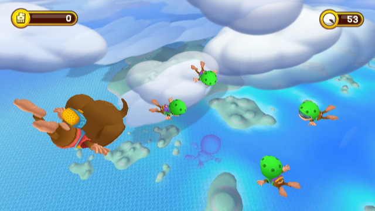

🏠 首頁
📁 SEGA 遊戲討論區
TGS09公開Super Monkey Ball Step & Roll 首部遊玩影片
👤 aoifh
🕐 2009-09-24 08:47:35
本文章最後由 aoifh 於 2009/9/24 05:18 PM 編輯
這次東京電玩展SEGA展出Wii 平台的Super Monkey Ball Step & Roll
已公開首部Gameplay Trailer
前作利用手把的感應來操作遊戲，這次能夠對應Wii Fit
相信玩法一定更豐富
當然小遊戲項目的部份有增加，多人模式可同時4人進行遊戲。
本作預計在2010年2月發售，之後SEGA也會在這次電玩展公佈更多的相關資訊。

附件: smbb.jpg
👤 binyi
🕐 2009-09-24 09:04:21
畫面配色看起來很鮮豔活潑
一開始的平台快速傾斜看起來有點暈. 平衡版更考驗操控技巧囉 XD
其他小遊戲看起來很有趣, 尬車→尬猴子球?!
👤 aoifh
🕐 2009-09-24 09:05:44
本文章最後由 aoifh 於 2009/9/24 05:17 PM 編輯
哈~就是尬猴子球
裡面有個項目有點類似像賽車的方式進行遊戲
很有意思[:baozi6:]
根據官方表示
多人遊玩的小遊戲項目包括Seesaw Ball﹝翹翹板球﹞、Monkey Bowling﹝猴子保齡球﹞、Monkey Race﹝猴子競速﹞